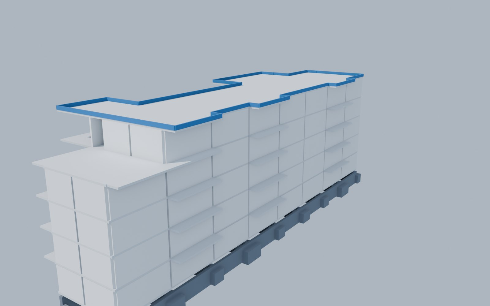
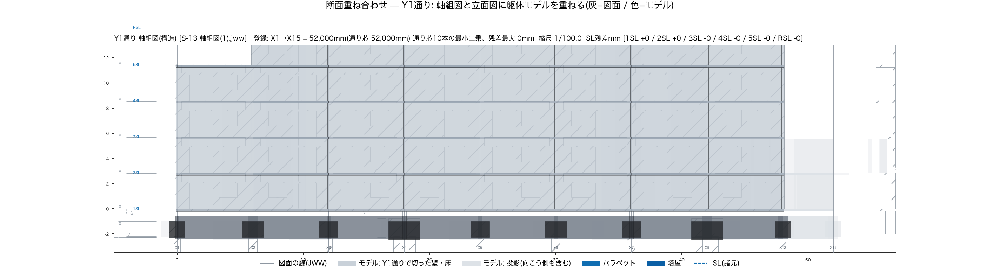

Hirayama Construction · JWW estimating · 2026-09
AI積算の拾い帳は、データベースである
Excel の拾い帳と並べて、データベースの形で作り直したら、Claude が図面を読み、数量を出し、実績と突き合わせ、拾わなかったものを人に見せるところまで通りました。3週間・自社8案件の到達点と、図面から数量までを AI が読み書きする形(7つの層)の整理です。公開版(2026-09-29 時点)。
- 図面から拾った案件
- 8 件 ／ うち実績と突合 7
- コンクリート 差率(6件)
- −0.2 〜 −12.5 %
- 鉄筋 差率(部位×径で突合 5件)
- −1.7 〜 −7.6 %
- 実績に寄せるための補正率
- 0 個(割増率・定着長は基準どおり)
差率 = (図面拾い − 実績) ÷ 実績。マイナスは図面拾いが実績より少ないこと。実績は工事精算書・契約内訳・構造事務所の設計数量が混ざります。新築RC造で、文字と線が座標付きで生きている図面(JWW・ベクタPDF)がある場合の値です。
01いまの拾い帳は、よくできている。足りないのは AI が読み書きする入口
当社の拾い帳は Excel の汎用シートです。14階まで対応し、打設階ごとの行に「部位 × 符号 × 寸法 × 本数」を人が図面を見て打つ。コンクリート・型枠・鉄筋が1枚から出て、見積依頼書の数量はすべてこの1枚に戻れる。根拠が1枚にあることが、この帳簿の価値です。無いのは根拠の出所です。どの図面のどの版から、誰のどの決めごとで、その行が出たのかが残りません。
積算専用のアプリケーションも多くあり、拾い・集計・内訳書までよくできています。それらも当社の Excel と同じく人が図面を読んで打つ前提の道具で、AI が読み書きする入口(形の決まったスキーマ、テキストで版管理できる形、行ごとの出典)を前提には作られていない、というのが当社が触った範囲での実感です。3週間、同じ図面をプログラムで拾って突き合わせて分かった「当社の拾い帳に足りないもの」は次の4つで、どれも精度ではありません。
図面を見て打つ
- 同じ図面を、拾うたびに読み直す
- 作図者が変わると縮尺・レイヤの割当・面の並びが変わる。5系統で1つも一致しなかった
決めごとが暗黙
- 端部補強筋の1本の長さ、受筋の兼用、壁梁の内法。構造図のリストと伏図だけからは一意に決まらず、標準配筋図と積算の決めごとが要る値が、拾う人の中にある
- 差の原因を推測すると外れる。5つ立てた仮説のうち4つが積算担当の回答で否定された
版が無い
- 訂正を別レイヤに重ね書きし旧値を消さない図面がある(同じセルに 12 と 148)
- 拾い帳のどの行がどの図面のどの版から来たかが残らない
拾わなかったものが見えない
- 合計が合っていてもモデルは正しいとは限らない。フィルタが黙って捨てた壁237本は差率に出ない
- 径別の合計は部位間で打ち消し合う
022026年の拾い帳 ─ 7つの層、うち5つがテーブル
拾い帳を「数量の表」ではなく「図面から数量までの根拠の連鎖」として持ち直しました。1〜5 の層は SQLite と JSON のテーブルで、Claude が読み書きします。6(人が見る材料)と 7(モデル)はそこから生成されます。人が書くのは 2・3 と、6 への所見だけです。正本(原図・プロファイル・諸元・規則表・数量の JSON)は git で版管理し、SQLite と .blend は正本から作り直せる派生物として追跡しません。
突合表は行ごとに「突合相手」(工事精算書・型枠見積依頼書・構造事務所の設計数量…)と「出し方」(機械抽出・図面から算出・目視・逆算・配分)の列を持ち、図面から出た値か実績から逆算した値かが必ず分かるようにしています。
03なぜデータベースか ─ Claude にとっての拾い帳
ここでいうデータベースは製品の名前ではなく、置き方の条件です。(1) 形が決まっている(スキーマ)、(2) 問い合わせで引ける、(3) 行ごとに出典がある、(4) 版がある。この4つを満たせば SQLite でも JSON でも表で、満たさなければ Excel の1枚もただのファイルです。派生物(SQLite・.blend)を捨てても正本から作り直せるのは、正本がこの形で置かれている証拠です。
読める
- 図面は一度だけ SQLite に入り、以後は SQL で問い合わせる。Claude は図面を開かない
- 諸元・規則・数量が JSON なので、どの値がどこから来たかを辿れる
書ける
- 数量・突合表・拾わなかった表は生成物。人が書くのはプロファイルと諸元だけ
- 突合表の値は手写しせず「拾い式」で再計算する。手写しは古くなる
直せる
- 規則は部位×役割の表。表を直せば次の案件から効く
- すべて git で版管理され、出自スタンプが「誰が・何から・いつ」を刻む
疑える
- 拾わなかった表と3Dの重ね合わせを人が見る。合っているかではなく、無いものは何かを問う
- 差率ではなく「行の状態」(拾えて合った／差が大きい／確かめられない／未算出)で到達度を測る
045つの原則
- 図面は一度だけ読む読み直すたびに縮尺や登録を考え直すのが事故のもとだった。正規化して SQL で引く。正本は原図、DB は派生物
- 形状は機械、決めごとは人形状は図面から一意に取れる。定着の取り方や受筋の兼用は取れない。人が書く値は1つの JSON に集め、全項目に出典を付ける
- 規則は表に、実績に合わせる倍率はコードに書かない鉄筋は「部位 × 役割 → 素の長さ・定着・継手」の表で決める(割増率・定着長は公共建築数量積算基準と図面の表どおり)。表を直せば次の案件から効く。素の長さに定着を含めた二重計上が3箇所あった
- 率で埋めない合わない部位を実績に寄せる補正率で埋めると「ある様式に合った」だけになり、次の案件で再現しない。残差にはすべて説明を付ける。説明できない残差は残差のまま書く
- 人が見るのは拾った表ではなく、拾わなかった表合計は打ち消し合う。図面にあって数量に入れなかったものを並べ、3Dモデルを図面に重ね、設計と積算が同じ紙を見る
05Blender の役割 ─ 3Dは絵ではなく検算
数量を出す関数と同じ規則で、壁・床板・基礎梁・フーチング・パラペットを直方体として置きます。そのモデルを軸組図・立面・断面・伏図に重ねると、数量の表を見ていても気づけない欠落が見えます。壁だけ原点を引き忘れて建物の外へ飛び散っていた、屋上パラペットが丸ごと無かった、階の割当から漏れた壁が237本あった。どれも合計の差率には出ませんでした。


同じ .blend から、段階別4D(仮設物込みのアニメーション、ターンテーブル、工程表に尺を合わせた説明動画)と IFC(躯体の直方体のみ)へ書き出せます。4D まで実走したのはまだ1案件です。拾い帳の一番下の層が3Dモデルになれば、積算と施工計画が同じ根拠を共有できます。
06どれだけ合ったか
| 案件 | 入口 | 突合相手 | コンクリート | 型枠 | 鉄筋 |
|---|---|---|---|---|---|
| 壁式RC 3階・約4,800 ㎡(成田市) | 構造図JWW | 施工実績(コン・型枠)／構造事務所の設計数量(鉄筋) | −9.1 | −3.3 | −6.3 |
| 壁式RC 5階・約1,900 ㎡(成田市) | 構造図JWW＋ST-Bridge | 施工実績(コン)／当社の拾い(型枠・鉄筋) | −0.2 | +1.9 | −1.7 |
| 壁式RC 6階・約1,600 ㎡(江戸川区) | 構造図JWW | 構造事務所の設計数量 | −4.1 | −2.6 | −7.6 |
| 壁式RC 4階・約2,300 ㎡(船橋市) | 構造図JWW | 構造事務所の設計数量 | −7.2 | −1.4 | −7.4 |
| 壁式RC 4階・約2,000 ㎡(船橋市) | 構造図PDFのみ(実績を見ずに拾った) | 積算ソフトの集計表(鉄筋のみ) | — | — | −6.0 |
| 壁式RC 3階・約500 ㎡(成田市) | 構造図PDF(目視転記) | 契約内訳(全工種) | −3.9 | 定義差 | −8.5 参考値(段が違う) |
| ラーメンRC 6階・約1,500 ㎡(足立区) | 構造図JWW | 契約数量 | −12.5 | −9.6 | −17.8 第1便(09-28)・要精査 |
鉄筋は「定着・継手込み、材料ロス前」の段で部位×径に並べた計(目視転記の案件のみ加工組立の対象数量比で段が違うため参考値)。青は ±10% 以内(概算・予算枠の用途での線)、太字は閾値の近くで要精査。コンクリート・型枠も初見は −0.8〜−11.3% で、積算担当の回答と図面の再読で直した後の値です。前の記事で公開済みの案件を含みます。型枠の「定義差」は実績側にスラブ小口・開口見込・雑型枠が含まれる差で、基礎を同じ拾い方にそろえると −2.4%。ラーメンRCのコンクリートは腰壁・垂れ壁など未計上部位の積み上げで差の6割が説明でき、残り約5%は未特定。ラーメンRCの鉄筋は 09-28 の第1便で、基礎・階段・雑が未計上のまま(表の他の値は 09-27 時点)。鉄筋は3週間前の −12〜−29% から、率で埋めずに部位ごとに直した値です。
鉄筋は「部位×径」で見ないと直す場所が分かりません。内訳書の合計と −7.8% で合って見えていた案件を、実績側を同じ段(ロス前・部位別)にそろえ直して部位×径に分けると −12.3% で、基礎 −77%・壁 −22% のマスがありました。部位ごとに直して −6.3%、±5% 以内のマスは 2 → 7 に増えました。合計だけを見ていたら直す場所は分からなかったはずです。
07道具立て
- 手順書
- 12 本 ／ 約 9,000 行
- スクリプト(Python)
- 109 本 ／ 約 32,000 行(使わなくなった6本は退役)
- 作図者プロファイル
- 5 本
- 積算担当への問い
- 29 問 未決
| 層 | 本数 | 役割 |
|---|---|---|
| 0 素性・正規化 | 7 | 図面を一度だけ読んで SQL で問い合わせる。作図者ごとの癖はここで吸収 |
| 1 抽出(構造図・意匠図) | 21 | リスト図の表 → 断面辞書、伏図の符号と線 → 部材配置、建具表・室・文字の数 |
| 2 数量 | 21 | コン・型枠・鉄筋(規則は部位×役割の表)、仮設・仕上・外構 |
| 3 突合 | 16 | 実績(正解データ)を読み、段と部位を揃えて並べる |
| 4 検算(人が見る材料) | 9 | 拾わなかった表・重ね合わせ図・チェック図・目視チェック票 |
| 5 モデル(Blender) | 16 | 数量と同じ規則で躯体を立てる。IFC・OBJ・DXF の受け渡し |
| 6 可視化・4D | 10 | パース・ターンテーブル・段階別4D・SNS 向け動画 |
| 7 配布 | 7 | 数量内訳書・突合表・確認事項・HTML/PDF |
コードは Claude が書き、人はルールを決めて数字を疑います。手順書にルールを文章で書いてからコードに落とす往復。JWW の読み取り部分は tools/jww-reader(MIT)。
08まだできていないこと
- 内装の壁・天井(下地・ボード・クロスが別々の面積で拾われている。こちらは1つの壁面積を3工種に使い回している)
- 鉄筋の残り(壁端部補強筋の1本の長さ、受筋の兼用、基礎梁主筋の連続区間。図面から一意に決まらない決めごと)
- ラーメン構造の鉄筋(第1便 −17.8%。基礎・階段・雑が未計上)、設備、スキャンPDF(OCRはしない)、施工計画で決まる数量(根切り・床付けの範囲)
設計課の法規精査・積算担当の確認前の一次判定です。数字は概算であり、建物の性能や適法性を示すものではありません。公開版では案件名・地番・実績数量の絶対値・取引先名・担当者名を除き、差率と件数だけを載せています。前の記事: JWW図面から躯体を立てて、二つの正解に重ねた ／ note「BIMがなくても積算はできました」 ─ 平山建設株式会社